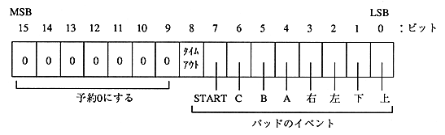

Item | Content | |||
In case of time | ||||
| | Time type | 0: Normal | ||
| | Time playback time | Time playback time | ||
| | number of events | number of event values | ||
| | Total Actions | Total Action Values for this Action | ||
| | Event value | Value representing event type | * 4 | |
| | Number of actions | Number of actions | ||
| | Action value | Action value to process | * 3 | |
| | -------------------- * Repeat 3 | |||
| | -------------------- * Repeat 4 |
|||

Table 5.7 Action values
Action type | Supplemental data |